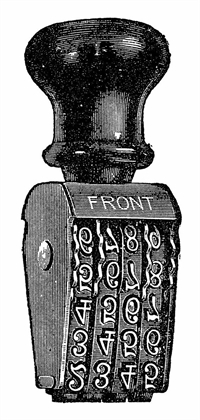

REPETITION
" La folie c'est de croire qu'en faisant toujours la même chose, on obtient un résultat différent." Albert Einstein
Ne vous est-il jamais arrivé d’avoir l’impression de reproduire les mêmes schémas dans votre vie, de tourner en rond ? D’attirer toujours le même type de personne ou des situations analogues qui se présentent et se répètent inlassablement ?
La qualité de vie est une notion récente qui s'est dégagée de l'étude des symptômes physiques et psychiques pour porter de manière plus précise sur le bonheur. Globalement, elle peut se définir comme la satisfaction de vivre, avec des sentiments de joie et de plaisir. La répétition des scénarios de vie a pour conséquence d'altérer cette qualité de vie par son effet négatif sur le ressenti émotionnel, la détérioration des relations professionnelles, sociales ou sentimentales et qui entraine un sentiment d'échec personnel.
Ce qui est souvent bouleversant, c'est d'observer comment nous pouvons répéter, de façon involontaire des situations qui nous font mal. En dépit de la souffrance, l'agacement, la tristesse et la colère viennent croiser l'acapacité à faire autrement, conduisant à la fatalité.
Une explication possible à ce phénomène de répétition est que lorsque nous rencontrons une situation dont l’un des composants ressemblent à un souvenir enregistré, le cerveau va immédiatement ressortir les ressentis de la situation d’origine. Cela regroupe la réalité de la situation mais aussi tout l’univers de perceptions que nous lui avons consciemment ou inconsciemment associé comme les attitudes, les comportements, les sentiments et (surtout) les limites. La partie inconsciente du cerveau se rebranche sur l’intensité émotionnelle de l’expérience originelle. Ce sont ces marqueurs émotionnels qui génèrent la souffrance que nous ressentons et on va ainsi déclencher des réactions qui peuvent être totalement disproportionnées par rapport à l’événement analogue. C’est la raison pour laquelle, on peut se retrouver face à un débordement affectif, sans que l’on comprenne pourquoi.
Voyons maintenant la dynamique inconsciente de la répétition. En s'appuyant sur une théorie psychanalytique Lacanienne, on peut concevoir 2 types de dynamiques de répétitions : il y aurait le retour en un acte sain d'un passé affectivement troublé voire refoulé ou le retour en acte pathologique, entre autre par l'usage de la compulsion, d'un passé traumatique. A considérer ainsi, au travers ce regard, un besoin inconscient d'accéder à la symbolisation dans le présent, de la symbolisation absente ou inachevée de l'acte originel, genèse du mouvement (de vie) répétitif.
La qualité de vie est une notion récente qui s'est dégagée de l'étude des symptômes physiques et psychiques pour porter de manière plus précise sur le bonheur. Globalement, elle peut se définir comme la satisfaction de vivre, avec des sentiments de joie et de plaisir. La répétition des scénarios de vie a pour conséquence d'altérer cette qualité de vie par son effet négatif sur le ressenti émotionnel, la détérioration des relations professionnelles, sociales ou sentimentales et qui entraine un sentiment d'échec personnel.
Ce qui est souvent bouleversant, c'est d'observer comment nous pouvons répéter, de façon involontaire des situations qui nous font mal. En dépit de la souffrance, l'agacement, la tristesse et la colère viennent croiser l'acapacité à faire autrement, conduisant à la fatalité.
Une explication possible à ce phénomène de répétition est que lorsque nous rencontrons une situation dont l’un des composants ressemblent à un souvenir enregistré, le cerveau va immédiatement ressortir les ressentis de la situation d’origine. Cela regroupe la réalité de la situation mais aussi tout l’univers de perceptions que nous lui avons consciemment ou inconsciemment associé comme les attitudes, les comportements, les sentiments et (surtout) les limites. La partie inconsciente du cerveau se rebranche sur l’intensité émotionnelle de l’expérience originelle. Ce sont ces marqueurs émotionnels qui génèrent la souffrance que nous ressentons et on va ainsi déclencher des réactions qui peuvent être totalement disproportionnées par rapport à l’événement analogue. C’est la raison pour laquelle, on peut se retrouver face à un débordement affectif, sans que l’on comprenne pourquoi.
Voyons maintenant la dynamique inconsciente de la répétition. En s'appuyant sur une théorie psychanalytique Lacanienne, on peut concevoir 2 types de dynamiques de répétitions : il y aurait le retour en un acte sain d'un passé affectivement troublé voire refoulé ou le retour en acte pathologique, entre autre par l'usage de la compulsion, d'un passé traumatique. A considérer ainsi, au travers ce regard, un besoin inconscient d'accéder à la symbolisation dans le présent, de la symbolisation absente ou inachevée de l'acte originel, genèse du mouvement (de vie) répétitif.

La répétition des schémas de vie peut se retrouver dans de nombreuses situations et domaine de la vie :
• Problème relationnel lié à l’autorité.
• Incapacité à faire des choix, prendre des décisions.
• Situation de harcèlement moral, de violences physique ou sexuelle.
• Situation d’abandon ou rejet, par un parent, un conjoint, au travail.
• Insécurité financière, manque d’argent, faillites.
• Situations d’échecs : amoureux, mariages, business, scolaire…
• Problèmes de santé.
• Difficulté à s’engager dans une relation, un travail…
• Accidents à répétition.
• Situation de trahison.
• etc
Cette répétition existencielle est trop souvent perçue après coup. On ne prend pas conscience que nous réitérons sans cesse. Ce qu'il y a de plus spécifique dans ce principe de redondance, c'est la perception pénible de ne pouvoir se réaliser pleinement, d'être limité non seulement par des obstacles de vie, mais aussi par un trouble intérieur qui se laisse mal définir. Quelles que soient les touches personnelles apportées, une répétition de vie s'inscrit dans un registre dramatique. Ce sentiment d'échec et de frustration peut être lui-même à l'origine d'états dépressifs ou anxieux.
Et tout cela est très souvent inconscient. Si la répétition à initialement une intention positive en visant à retrouver un bénéfice déja obtenu dans la situation originelle, le résultat n'en est pas aussi favorable. Alors, malgré une tentative inconsciente de restructuration et de réassurance, consciemment le sujet se sent emprisonné à devoir vivre toujours de la même façon, avec toujours le même résultat.
Pour se donner les moyens d'y mettre fin, il est judicieux de recenser la principale blessure et se libérer de son emprise en déterminant ses besoins actuels. Le travail sous hypnose peut donc être porté sur la genèse de la répétition. Il arrive d’ailleurs que cette situation n’appartienne pas à la personne directement mais relève d’un événement vécu par un ancêtre de la lignée paternelle ou maternelle. Aussi, la créativité sous hypnose va favoriser l'émergence d'autres schémas équilibrants, répondants aux valeurs et ambitions du sujet.
• Problème relationnel lié à l’autorité.
• Incapacité à faire des choix, prendre des décisions.
• Situation de harcèlement moral, de violences physique ou sexuelle.
• Situation d’abandon ou rejet, par un parent, un conjoint, au travail.
• Insécurité financière, manque d’argent, faillites.
• Situations d’échecs : amoureux, mariages, business, scolaire…
• Problèmes de santé.
• Difficulté à s’engager dans une relation, un travail…
• Accidents à répétition.
• Situation de trahison.
• etc
Cette répétition existencielle est trop souvent perçue après coup. On ne prend pas conscience que nous réitérons sans cesse. Ce qu'il y a de plus spécifique dans ce principe de redondance, c'est la perception pénible de ne pouvoir se réaliser pleinement, d'être limité non seulement par des obstacles de vie, mais aussi par un trouble intérieur qui se laisse mal définir. Quelles que soient les touches personnelles apportées, une répétition de vie s'inscrit dans un registre dramatique. Ce sentiment d'échec et de frustration peut être lui-même à l'origine d'états dépressifs ou anxieux.
Et tout cela est très souvent inconscient. Si la répétition à initialement une intention positive en visant à retrouver un bénéfice déja obtenu dans la situation originelle, le résultat n'en est pas aussi favorable. Alors, malgré une tentative inconsciente de restructuration et de réassurance, consciemment le sujet se sent emprisonné à devoir vivre toujours de la même façon, avec toujours le même résultat.
Pour se donner les moyens d'y mettre fin, il est judicieux de recenser la principale blessure et se libérer de son emprise en déterminant ses besoins actuels. Le travail sous hypnose peut donc être porté sur la genèse de la répétition. Il arrive d’ailleurs que cette situation n’appartienne pas à la personne directement mais relève d’un événement vécu par un ancêtre de la lignée paternelle ou maternelle. Aussi, la créativité sous hypnose va favoriser l'émergence d'autres schémas équilibrants, répondants aux valeurs et ambitions du sujet.
EN RELATION
TRANSGENERATION
FRUSTRATION

TRAUMA
VISION
VALEUR
CROYANCE